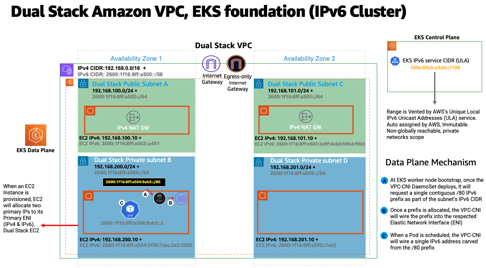
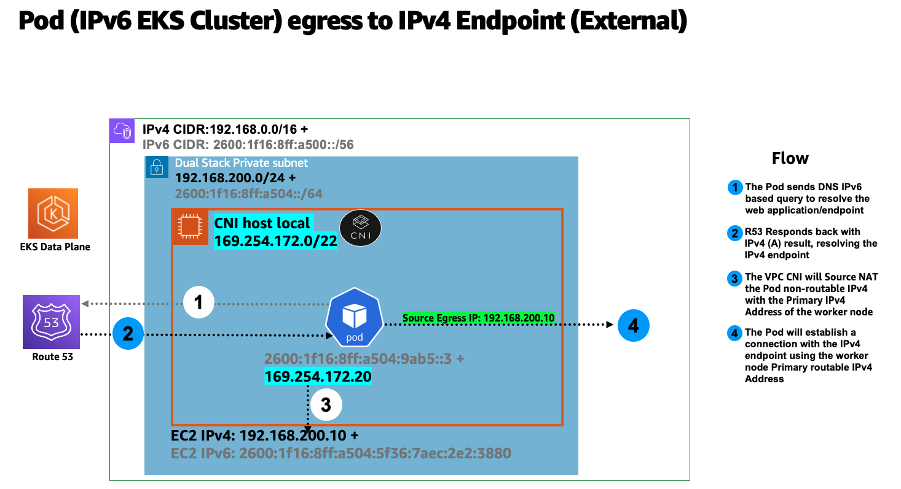
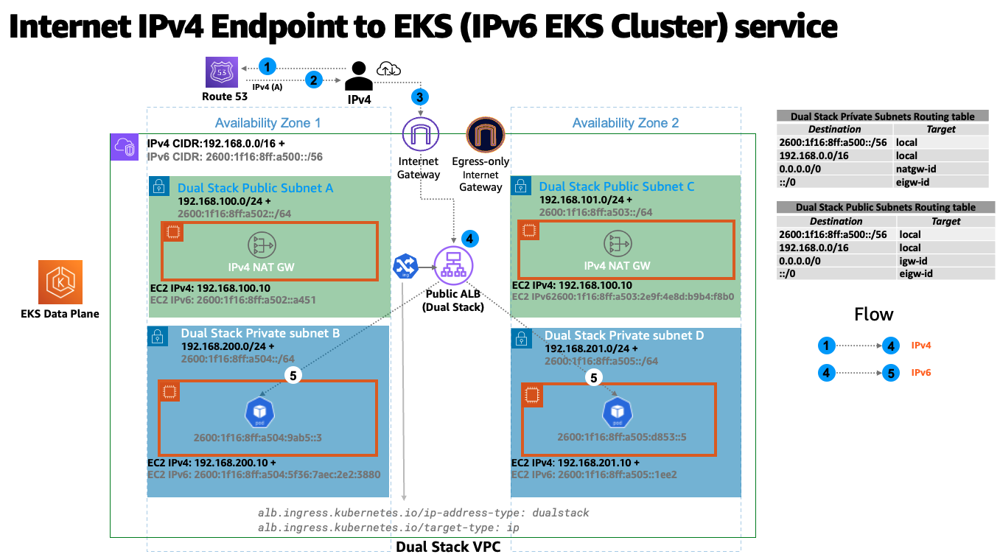

运行 IPv6 EKS 集群¶
EKS 在 IPv6 模式下解决了大规模 EKS 集群中常见的 IPv4 耗尽挑战。EKS 对 IPv6 的支持重点解决 IPv4 地址空间有限导致的 IPv4 耗尽问题。这是许多客户提出的一个重大问题，与 Kubernetes 的"IPv4/IPv6 双栈"功能不同。 EKS/IPv6 还将提供使用 IPv6 CIDR 互连网络边界的灵活性，从而最小化遭受 CIDR 重叠的机会，因此解决了两个问题(集群内和跨集群)。 在 IPv6 模式(--ip-family ipv6)部署 EKS 集群时，此操作是不可逆的。简单来说，EKS IPv6 支持将在整个集群生命周期内启用。
在 IPv6 EKS 集群中，Pod 和服务将收到 IPv6 地址，同时保持与遗留 IPv4 端点的兼容性。这包括外部 IPv4 端点访问集群内服务的能力，以及 Pod 访问外部 IPv4 端点的能力。
Amazon EKS IPv6 支持利用了 VPC 的原生 IPv6 功能。每个 VPC 都分配了一个 IPv4 地址前缀(CIDR 块大小可以从 /16 到 /28)和来自 Amazon 的 GUA(全局单播地址)的唯一 /56 IPv6 地址前缀(固定)。你可以为 VPC 中的每个子网分配一个 /64 地址前缀。IPv4 功能，如路由表、网络访问控制列表、对等和 DNS 解析，在启用了 IPv6 的 VPC 中的工作方式与之前相同。VPC 随后被称为双栈 VPC，在双栈子网之后，下图描绘了支持 EKS/IPv6 集群的 IPV4&IPv6 VPC 基础模式：

在 IPv6 世界中，每个地址都是可路由的互联网地址。默认情况下，VPC 从公共 GUA 范围分配 IPv6 CIDR。VPC 不支持从 RFC 4193(fd00：:/8 或 fc00：:/8)定义的唯一本地地址(ULA)范围分配私有 IPv6 地址，即使你想分配自己拥有的 IPv6 CIDR 也是如此。从私有子网出口到互联网是通过在 VPC 中实现仅出口互联网网关(EIGW)来支持的，允许出站流量而阻止所有入站流量。 下图描绘了 EKS/IPv6 集群内私有子网中的 Pod 出口到互联网 IPv6 端点的流程：

实施 IPv6 子网的最佳实践可以在 VPC 用户指南中找到。
在 IPv6 EKS 集群中，节点和 Pod 收到公共 IPv6 地址。EKS 根据唯一本地 IPv6 单播地址(ULA)为服务分配 IPv6 地址。IPv6 集群的 ULA 服务 CIDR 在集群创建阶段自动分配，不能像 IPv4 那样指定。下图描绘了基于 EKS/IPv6 的集群控制平面和数据平面基础模式：

概述¶
EKS/IPv6 仅在前缀模式(VPC-CNI 插件 ENI IP 分配模式)下受支持。了解更多关于前缀模式的信息。
前缀分配只适用于基于 Nitro 的 EC2 实例，因此 EKS/IPv6 仅在集群数据平面使用基于 Nitro 的 EC2 实例时受支持。
简单来说，每个工作节点的 /80 IPv6 前缀将产生约 10^14 个 IPv6 地址，限制因素将不再是 IP，而是 Pod 密度(资源方面)。
IPv6 前缀分配仅在 EKS 工作节点引导时发生。 这种行为旨在缓解 EKS/IPv4 集群中高 Pod 流转率导致 Pod 调度延迟的情况，这些延迟是由于 VPC CNI 插件(ipamd)生成的旨在及时分配私有 IPv4 地址的节流 API 调用。它也被认为可以使 VPC-CNI 插件高级旋钮调优WARM_IP/ENI、MINIMUM_IP变得不必要。
下图放大了 IPv6 工作节点弹性网络接口(ENI)：

每个 EKS 工作节点都被分配了 IPv4 和 IPv6 地址，以及相应的 DNS 条目。对于给定的工作节点，只消耗了双栈子网中的一个 IPv4 地址。EKS 对 IPv6 的支持使你能够通过高度固定的仅出口 IPv4 模型与 IPv4 端点(AWS、内部、互联网)通信。EKS 实现了一个主机本地 CNI 插件，次于 VPC CNI 插件，用于为 Pod 分配和配置 IPv4 地址。CNI 插件从 169.254.172.0/22 范围为 Pod 配置一个特定于主机的不可路由 IPv4 地址。分配给 Pod 的 IPv4 地址在工作节点内是唯一的,并且不会在工作节点之外传播。169.254.172.0/22 提供了多达 1024 个唯一的 IPv4 地址，可以支持大型实例类型。
下图描绘了 IPv6 Pod 连接到集群边界之外的 IPv4 端点(非互联网)的流程：

在上图中，Pod 将对端点执行 DNS 查找，并在收到 IPv4 "A"响应时，Pod 的仅节点唯一 IPv4 地址将通过源网络地址转换(SNAT)转换为连接到 EC2 工作节点的主网络接口的私有 IPv4(VPC)地址。
EKS/IPv6 Pod 还需要通过公共 IPv4 地址连接到互联网上的 IPv4 端点，为此存在类似的流程。 下图描绘了 IPv6 Pod 连接到集群边界之外的 IPv4 端点(可路由到互联网)的流程：

在上图中，Pod 将对端点执行 DNS 查找，并在收到 IPv4 "A"响应时，Pod 的仅节点唯一 IPv4 地址将通过源网络地址转换(SNAT)转换为连接到 EC2 工作节点的主网络接口的私有 IPv4(VPC)地址。然后，Pod IPv4 地址(源 IPv4：EC2 主 IP)将路由到 IPv4 NAT 网关，在那里 EC2 主 IP 将转换(SNAT)为有效的可路由到互联网的 IPv4 公共 IP 地址(NAT 网关分配的公共 IP)。
任何跨节点的 Pod 到 Pod 通信都将使用 IPv6 地址。VPC CNI 配置 iptables 来处理 IPv6，同时阻止任何 IPv4 连接。
Kubernetes 服务将仅从唯一本地 IPv6 单播地址(ULA)接收 IPv6 地址(ClusterIP)。IPv6 集群的 ULA 服务 CIDR 在 EKS 集群创建阶段自动分配，无法修改。下图描绘了 Pod 到 Kubernetes 服务的流程：

服务通过 AWS 负载均衡器暴露到互联网。负载均衡器接收公共 IPv4 和 IPv6 地址，也称为双栈负载均衡器。对于访问 IPv6 集群 kubernetes 服务的 IPv4 客户端，负载均衡器执行 IPv4 到 IPv6 的转换。
Amazon EKS 建议在私有子网中运行工作节点和 Pod。你可以在公共子网中创建公共负载均衡器，将流量负载均衡到运行在私有子网中节点上的 Pod。 下图描绘了互联网 IPv4 用户访问 EKS/IPv6 Ingress 服务的情况：

注意：上述模式需要部署最新版本的 AWS 负载均衡器控制器
EKS 控制平面 <-> 数据平面通信¶
EKS 将在双栈模式(IPv4/IPv6)下为跨账户 ENI(X-ENI)提供资源。Kubernetes 节点组件如 kubelet 和 kube-proxy 被配置为支持双栈。kubelet 和 kube-proxy 在 hostNetwork 模式下运行，并绑定到连接到节点主网络接口的 IPv4 和 IPv6 地址。Kubernetes api-server 通过基于 IPv6 的 X-ENI 与 Pod 和节点组件通信。Pod 通过 X-ENI 与 api-server 通信，Pod 到 api-server 的通信始终使用 IPv6 模式。

建议¶
保持对 IPv4 EKS API 的访问¶
EKS API 仅可通过 IPv4 访问。这也包括集群 API 端点。你将无法从仅 IPv6 网络访问集群端点和 API。你的网络需要支持(1)NAT64/DNS64 等 IPv6 过渡机制，以促进 IPv6 和 IPv4 主机之间的通信，以及(2)支持 IPv4 端点转换的 DNS 服务。
根据计算资源进行调度¶
单个 IPv6 前缀就足以在单个节点上运行许多 Pod。这也有效地消除了 ENI 和 IP 对节点上最大 Pod 数量的限制。尽管 IPv6 消除了对最大 Pod 数量的直接依赖，但在使用较小实例类型(如 m5.large)的前缀附件时，你可能会先耗尽实例的 CPU 和内存资源，而不是 IP 地址。如果你使用自管理节点组或具有自定义 AMI ID 的托管节点组，则必须手动设置 EKS 推荐的最大 Pod 值。
你可以使用以下公式来确定在 IPv6 EKS 集群的节点上可以部署的最大 Pod 数量。
-
((实例类型的网络接口数量(每个网络接口的前缀数-1)* 16) + 2
-
((3 个 ENI)((每个 ENI 10 个辅助 IP-1) 16)) + 2 = 460(实际)
托管节点组会自动计算最大 Pod 数量。避免更改 EKS 推荐的最大 Pod 数量值，以免由于资源限制而导致 Pod 调度失败。
评估现有自定义网络的目的¶
如果当前启用了自定义网络,Amazon EKS 建议你重新评估在 IPv6 下对它的需求。如果你选择使用自定义网络来解决 IPv4 耗尽问题，在 IPv6 下就不再需要了。如果你正在利用自定义网络来满足安全要求，例如为节点和 Pod 提供单独的网络，我们鼓励你提交 EKS 路线图请求。
EKS/IPv6 集群中的 Fargate Pod¶
EKS 支持在 Fargate 上运行的 Pod 使用 IPv6。在 Fargate 上运行的 Pod 将消耗从 VPC CI DR 范围(IPv4&IPv6)划分的 IPv6 和 VPC 可路由私有 IPv4 地址。简单来说，你的 EKS/Fargate Pod 集群范围内的密度将受到可用 IPv4 和 IPv6 地址的限制。建议为双栈子网/VPC CIDR 规划未来增长。如果底层子网不包含可用的 IPv4 地址，无论有多少可用的 IPv6 地址，你都将无法调度新的 Fargate Pod。
部署 AWS 负载均衡器控制器(LBC)¶
上游内置的 Kubernetes 服务控制器不支持 IPv6。我们建议使用最新版本的 AWS 负载均衡器控制器附加组件。LBC 只会在消费带有 "alb.ingress.kubernetes.io/ip-address-type: dualstack" 和 "alb.ingress.kubernetes.io/target-type: ip" 注解的相应 kubernetes service/ingress 定义时部署双栈 NLB 或双栈 ALB。
AWS 网络负载均衡器不支持双栈 UDP 协议地址类型。如果你对低延迟、实时流媒体、在线游戏和 IoT 有强烈要求，我们建议运行 IPv4 集群。要了解如何管理 UDP 服务的健康检查，请参阅"如何将 UDP 流量路由到 Kubernetes"。